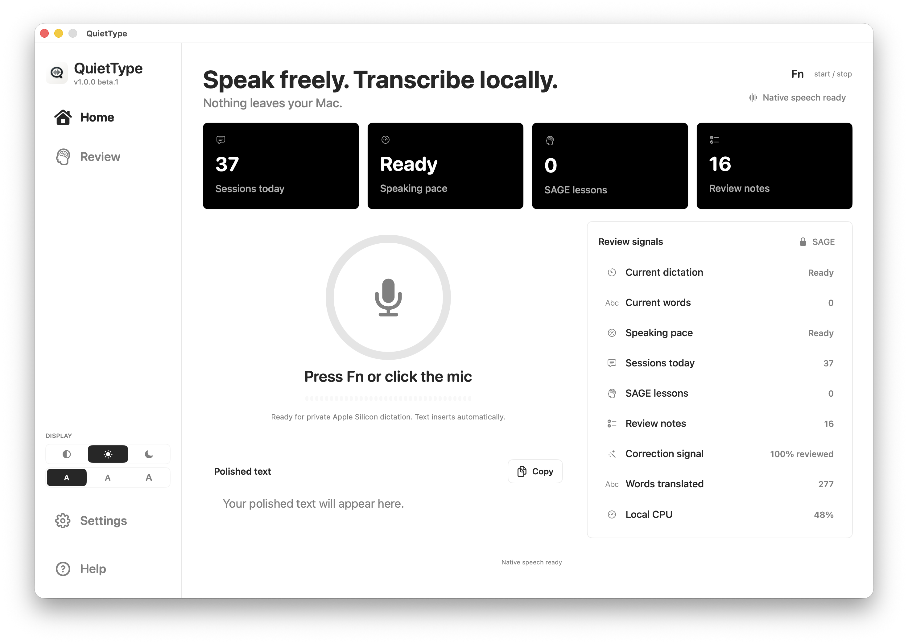
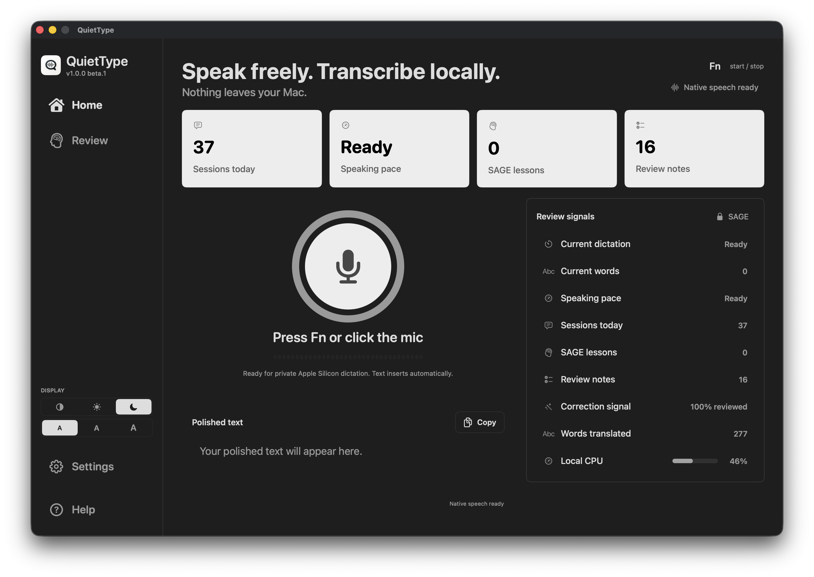
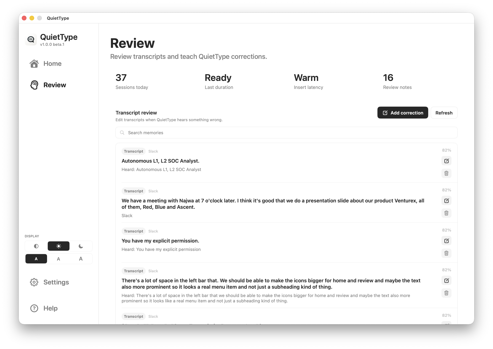
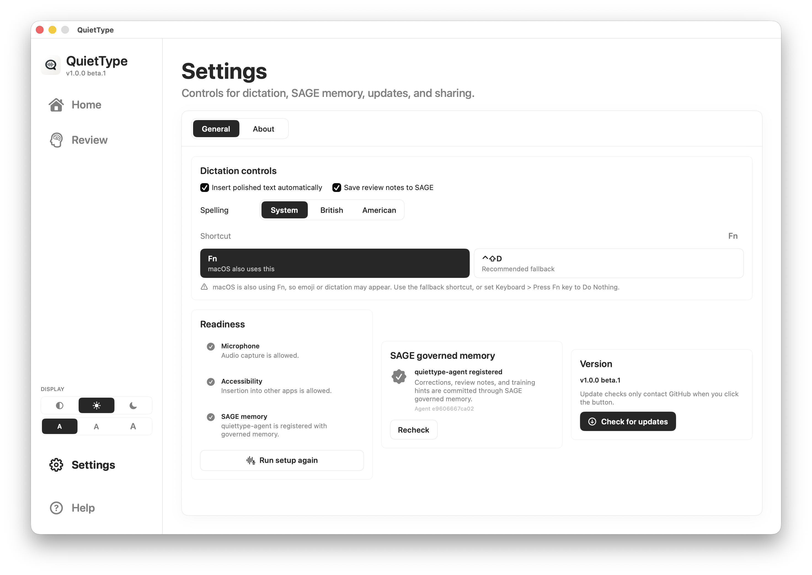

Better AI prompts
Speak the full context for ChatGPT, Claude, Codex, Cursor and other AI tools: goals, constraints, examples and the exact output you want.
QuietType turns natural speech into clean text wherever your cursor is focused: AI prompts, email, WhatsApp, docs, terminals, editors and notes. Local ML on your Mac, without cloud dictation processing.
SAGE keeps preferred spellings, vocabulary, corrections and review notes editable on your Mac so QuietType can improve without sending dictation to a cloud service.

QuietType inserts polished text into the active app, so it works wherever the cursor has focus: AI chats, email, WhatsApp, Slack, notes, documents, terminals, editors, GitHub issues and internal tools.
Speak the full context for ChatGPT, Claude, Codex, Cursor and other AI tools: goals, constraints, examples and the exact output you want.
Dictate replies for email, WhatsApp, Slack, support tickets, comments and docs without switching to a special transcription window.
Teach names, product terms, client spellings, acronyms and technical vocabulary so repeated dictation keeps matching the way you work.
QuietType is designed so voice, transcripts, prompts, vocabulary, corrections and review notes stay on your machine. The normal dictation path is native macOS capture, on-device transcription, local cleanup, local insertion and local SAGE memory.
QuietType uses Apple platform primitives and local ML instead of hosted ASR. Network participation is never required for normal dictation.
Speech and setup recordings are processed locally. They are not sent to a hosted speech API.
SAGE stores preferred spellings, vocabulary, correction history and review notes locally so QuietType can improve without cloud dictation. Durable memory writes are governed by BFT consensus.
Vocabulary, transcript notes and correction memories are visible and editable, so users can teach the system without losing control.
The normal dictation path has no OpenAI, Gemini, Anthropic or remote ASR dependency. If local engines are unavailable, setup tells you.
QuietType uses SAGE as local correction memory for the material that makes dictation better over time: preferred spellings, project vocabulary, correction patterns and review notes from real desktop work. BFT governance keeps durable memory writes auditable instead of opaque.
Every durable spelling, vocabulary and review note stays in a local governed memory path rather than an opaque scratchpad.
SAGE gives QuietType editable local memory for AI prompts, terminology-heavy work, everyday dictation and correction history. Beta builds are designed to bring the SAGE GUI with the app for a guided first-run setup.
Read the SAGE overview or inspect the SAGE GitHub repository.
QuietType is not a wrapper around transcription. It streams audio, stabilizes partial text, applies SAGE correction memory, formats the result and inserts it into the active app.
The app keeps the operational details visible without making the user manage backend machinery. Setup, SAGE memory review and privacy controls stay close to the dictation workflow.



QuietType 1.0.0 beta 4 is signed, notarized and ready for Apple Silicon Macs. Download the DMG from GitHub, drag QuietType into Applications and start local dictation.